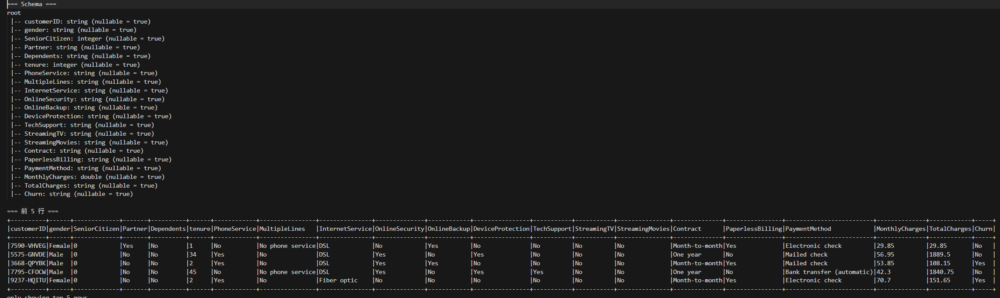
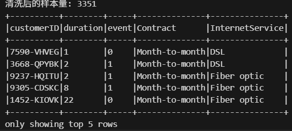
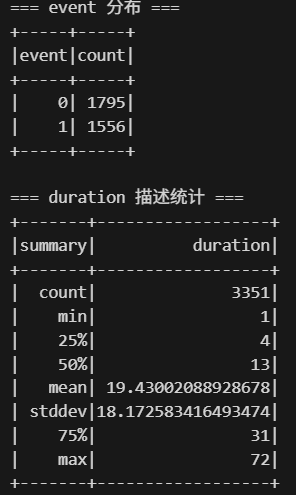
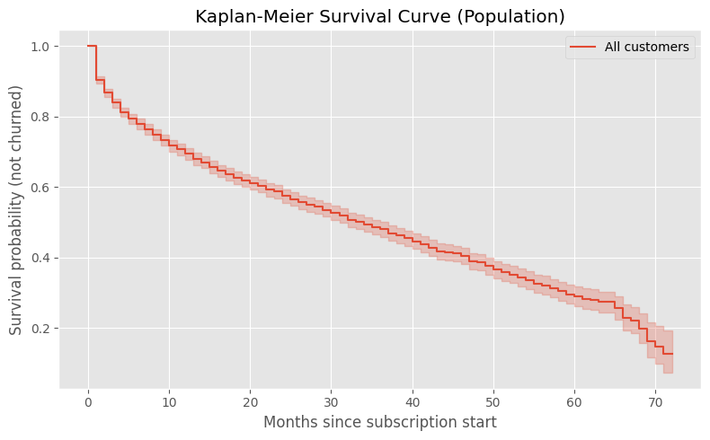
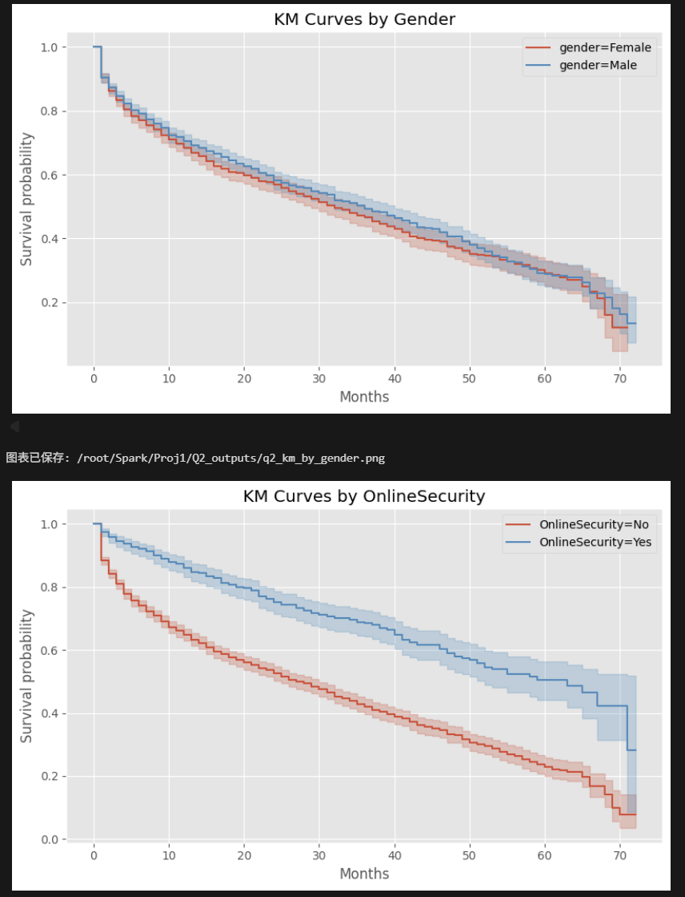
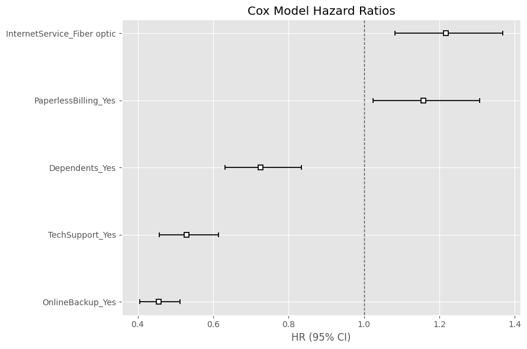
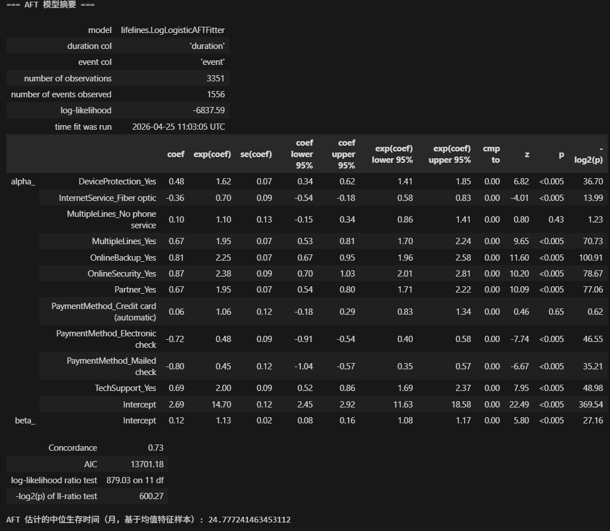
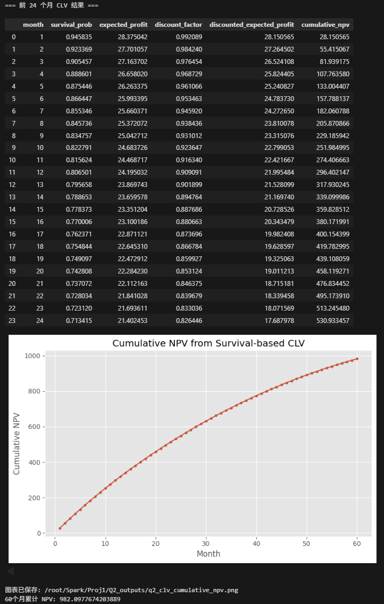

Survival Analysis
Customer Churn Report
本页面展示 Q2(2) 的 survival analysis 报告。分析对象是 IBM Telco Customer Churn 数据集， 重点解释客户从开始订阅服务到流失之间的时间，以及不同客户特征和服务变量如何影响流失风险。
1. 任务说明与数据集
本题使用的是 IBM Telco Customer Churn 数据集。这个数据集的每一行代表一个电信公司的客户， 包含客户的基本信息、服务类型、付款方式、月消费金额、总消费金额以及是否流失等字段。本题的目标是用 survival analysis 分析客户从开始订阅服务到流失之间的时间，并进一步观察哪些因素可能影响客户流失风险。
本次分析在服务器上完成，并参考了 Databricks 官方 survival analysis casebook 的整体流程。
由于官方代码中包含一些 Databricks 专用语法，例如 dbutils、DBFS 和 Delta Lake，
因此我在自己的 notebook 中改写成了普通服务器环境可以运行的 PySpark、pandas、lifelines 和 matplotlib 代码。
最终所有代码整理在一个 q2_survival_analysis.ipynb 文件中。
原始数据共有 7043 行和 21 列。主要字段包括 customerID、gender、
tenure、InternetService、OnlineSecurity、
TechSupport、PaymentMethod、MonthlyCharges、
TotalCharges 和 Churn 等。

2. 生存分析变量定义
在这个案例中，生存分析的对象是电信客户。每个客户被看作一个观察个体，分析的核心是客户能在公司服务中留存多长时间。
Duration
duration = tenure，表示客户已经使用服务的月份数，因此可以作为生存时间。
Event
event = Churn。如果 Churn = Yes，则 event 记为 1；如果 Churn = No，则 event 记为 0。
其中，tenure 表示客户已经使用服务的月份数，因此可以作为生存时间。
Churn 表示客户是否已经流失。如果 Churn = Yes，则 event 记为 1，
表示流失事件已经发生；如果 Churn = No，则 event 记为 0，表示观察结束时客户仍未流失。
这类样本在生存分析中属于右删失样本，我们只知道他们在当前观察期内还没有流失，但不能认为他们以后永远不会流失。
这个设定和传统分类任务不太一样。普通分类模型通常只关注“是否流失”，而 survival analysis 还关注“什么时候流失”。
3. 数据清洗过程
数据读取后，我先对原始字段进行了处理。主要清洗步骤如下：
- 将
Churn从 Yes/No 转换成event变量，Yes 记为 1，No 记为 0。 - 将
tenure作为duration，表示客户留存月份数。 - 只保留
Contract = Month-to-month的客户。 - 去除
InternetService = No的客户。 - 将
TotalCharges从字符串转换为数值变量，方便后续导入 MySQL 和进一步分析。 - 创建 Spark SQL 临时视图，方便同时使用 Spark DataFrame API 和 Spark SQL API 进行统计。
OnlineSecurity、OnlineBackup、
TechSupport 等互联网服务相关变量有实际解释意义。

4. 探索性分析结果
清洗后的样本中，流失客户比例约为 46.43%。这个比例不低，说明月付互联网服务客户确实是一个比较容易流失的群体。
从 duration 的结果看，客户留存时长差异很大。中位数是 13 个月，均值是 19.43 个月，
说明有一部分客户留存时间较长，把平均值拉高了。
我还按几个关键变量计算了 churn rate 和平均 duration。结果显示，Fiber optic 用户的 churn rate 为 54.61%， 明显高于 DSL 用户的 32.22%。按付款方式看，Electronic check 用户的 churn rate 为 55.08%，高于自动扣款方式。 按服务功能看，没有 OnlineSecurity 的用户 churn rate 为 51.05%，有 OnlineSecurity 的用户为 29.58%； 没有 TechSupport 的用户 churn rate 为 50.37%，有 TechSupport 的用户为 30.70%。
这些结果说明，互联网服务类型、付款方式、安全服务和技术支持都可能和客户流失有关。


5. Kaplan-Meier 生存曲线
接着，我使用 Kaplan-Meier 方法估计整体客户留存曲线。Kaplan-Meier curve 的横轴是 duration， 也就是客户留存月份数；纵轴是 survival probability，也就是客户在某个月份之后仍未流失的概率。
整体 Kaplan-Meier 曲线显示，随着使用月份增加，客户仍然留存的概率逐渐下降。本次分析得到的总体中位生存时间为 34 个月。 这里的 34 个月不是平均流失时间，而是 Kaplan-Meier 曲线估计 survival probability 下降到 0.5 左右的时间点。 也就是说，在当前清洗后的月付互联网服务客户中，大约到第 34 个月时，客户继续留存的概率降到一半左右。

6. 分组生存曲线与 Log-rank Test
为了比较不同客户群体之间的留存差异，我分别画了 gender 和 OnlineSecurity 的分组 Kaplan-Meier 曲线， 并使用 log-rank test 检验组间差异。
gender 分组的 log-rank test p-value 为 0.153。这个值大于 0.05，说明在当前样本下， 没有足够证据认为男性和女性客户的生存曲线存在显著差异。也就是说，gender 对客户留存的影响并不明显。
OnlineSecurity 分组的 log-rank test p-value 约为 1.19e-32，远小于 0.05。这说明是否开通 OnlineSecurity 的客户在生存曲线上存在非常显著的差异。从曲线趋势看，开通 OnlineSecurity 的客户留存概率更高， 流失风险更低。这个结果和前面的探索性分析是一致的。没有 OnlineSecurity 的客户 churn rate 更高， Kaplan-Meier 曲线也显示他们的留存情况更差。

7. Cox Proportional Hazards 模型
为了进一步分析多个变量对流失风险的影响，我使用 Cox Proportional Hazards 模型。
Cox 模型的核心输出是 hazard ratio，也就是 exp(coef)。
- hazard ratio > 1：该变量会提高流失风险。
- hazard ratio < 1：该变量会降低流失风险。
- p-value < 0.05：该变量在统计上较显著。
从结果看，OnlineBackup_Yes 和 TechSupport_Yes 的 hazard ratio 明显小于 1，
说明这两个服务功能和更低的流失风险有关。InternetService_Fiber optic 的 hazard ratio 大于 1，
说明 Fiber optic 用户在当前样本中的流失风险更高。这个结果也和前面探索性分析中 Fiber optic 用户 churn rate 较高的发现一致。
同时，我也检查了 Cox 模型的比例风险假设。结果显示，
InternetService_Fiber optic、OnlineBackup_Yes 和 TechSupport_Yes
可能违反 proportional hazards assumption。因此，Cox 模型结果更适合作为探索性解释结果，而不应该被当成唯一的最终预测模型。

8. Accelerated Failure Time 模型
除了 Cox 模型，还使用了 Log-Logistic Accelerated Failure Time model。AFT 模型和 Cox 模型的角度不同。 Cox 模型关注变量如何影响风险率，AFT 模型则更直接地建模 time-to-event，也就是客户留存时间。
本次 AFT 模型估计的中位生存时间为 24.78 个月。AFT 模型结果可以作为 Cox 模型的补充， 帮助我们从留存时间角度理解客户流失问题。比如，一些服务功能可能会延长客户留存时间， 而一些付款方式或服务类型可能会缩短客户留存时间。

9. Customer Lifetime Value 计算
用 Cox 模型预测了一个样本客户的 survival probability，并进一步计算了简单的 customer lifetime value。 这里设定：monthly profit = 30，annual discount rate = 10%。
计算过程是先根据 survival probability 得到每个月的 expected profit，再考虑折现率计算 discounted expected profit， 最后累计得到 cumulative NPV。前 24 个月的结果显示，随着月份增加，survival probability 逐渐下降， 因此 expected profit 也逐渐下降。60 个月累计 NPV 为 982.10。
这个部分说明 survival analysis 不只是可以用于判断客户是否会流失，还能进一步服务于商业决策。 因为客户是否留存会影响未来收益，所以 survival probability 可以被转化成 customer lifetime value， 用来辅助客户分层、营销投入和服务策略设计。

10. 小结
本题使用 IBM Telco Customer Churn 数据集完成了一个完整的 survival analysis 流程。 分析对象是电信客户，duration 是客户留存月份数，event 是客户是否流失。 清洗后数据共有 3351 个样本，其中 1556 个客户已经流失，1795 个客户在观察结束时仍未流失。
Kaplan-Meier 分析显示，总体中位生存时间约为 34 个月。分组曲线和 log-rank test 表明， gender 对客户留存的影响不明显，但 OnlineSecurity 对客户留存有显著影响。 Cox 模型进一步显示，OnlineBackup、TechSupport 和 Dependents 与更低的流失风险有关， 而 Fiber optic InternetService 和 PaperlessBilling 与更高的流失风险有关。 AFT 模型从留存时间角度提供了补充分析，CLV 计算则展示了 survival probability 在客户生命周期价值估计中的应用。
整体来看，survival analysis 比普通 churn 分类更适合回答“客户什么时候可能流失”和“哪些因素影响客户留存时间”这类问题。 在客户流失分析中，它不仅能用于风险解释，也能进一步支持客户价值评估和运营决策。